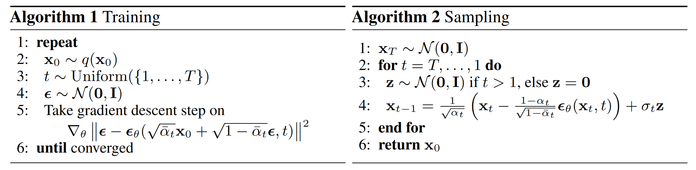

📜 引言
该章节记录扩散模型的基本概念以及数学推导。
| 创建者 | 创建时间 | 最后一次修改时间 |
| IamMI | 2025.8.30 | 2025.8.30 |
扩散模型广泛应用于图像生成领域，其精细化的生成质量以及严谨的数学基础，使其成为生成领域的热门。如今的扩散模型还尝试应用到LLM领域，还有很多地方值得人们的探索。
🧩 数学原理
对于证据 x0，其真实分布为 q(x0) ，我们构造一个马尔可夫链，有
q(xt∣xt−1)=N(xt∣1−βt⋅xt−1 ; βtI) 其中 βt<1 ，这是一个逐步加噪的过程。显然我们可以推导出
q(xt∣x0)=N(xt∣αˉt⋅x0 ; (1−αˉt)I)αt=1−βtαˉt=k=1∏tαk 具体推导可见 参考文献 1
此时导出 limt→∞xt=x∞∼N(0 ; I)，或者说，当 t=T 足够大时，此时 xT∼N(0 ; I)。我们需要建模出 pθ(x0) ，可以将反向过程进行建模 pθ(xt−1∣xt)≈q(xt−1∣xt) ，但是 q(xt−1∣xt) 难以得到，此时我们需要另辟蹊径，注意到
q(xt−1∣xt,x0)=q(xt∣xt−1)⋅q(xt∣x0)q(xt−1∣x0) 这个概率是可以求解的，同时还有
t=2∏Tq(xt−1∣xt,x0)=q(x1:T∣x0)⋅q(xT∣x0)1 这里的 q(x1:T∣x0) 是非常关键的变量。
我们依旧建模反向过程 pθ(xt−1∣xt) ，这样一来我们就可以通过
pθ(x0:T)=pθ(xT)⋅t=1∏Tpθ(xt−1∣xt) 来一步步反向采样出满足 x0∼pθ(x0) 的样本。此时我们的优化目标为极大似然估计
θmax Ex0∼q(x0)[logpθ(x0)]=Ex0∼q(x0)[log∫pθ(x0:T)dx1:T]
上式中， x0 为 evident，而 x1:T 为隐变量。对于这种形式的优化目标，常见有 EM 算法，但该做法需要求解 pθ(x1:T∣x0)，计算复杂度非常大，一般无法实现，
为此，我们参考 VAE 的证明，引入 ELBO，此时有
logpθ(x0)=Eq(x1:T∣x0)[logq(x1:T∣x0)pθ(x0:T)]+KL{q(x1:T∣x0)∥pθ(x1:T∣x0)} 其中 Eq(x1:T∣x0)[logq(x1:T∣x0)pθ(x0:T)dx1:T] 就是 ELBO ，此时我们忽略掉后面的 KL 项，直接优化更加方便的 ELBO 项。
Eq(x1:T∣x0)[logq(x1:T∣x0)pθ(x0:T)]=Eq(x1:T∣x0)log[q(xT∣x0)pθ(xT)⋅pθ(x0∣x1)⋅t=1∏T−1q(xt∣xt+1,x0)pθ(xt∣xt+1)]=−KL[q(xT∣x0)∥pθ(xT)]+Eq(x1∣x0)logpθ(x0∣x1)+t=1∑T−1Eq(xt,xt+1∣x0)logq(xt∣xt+1,x0)pθ(xt∣xt+1) 注意到整个 ELBO 项的大头就在第三项，此时分析
Eq(xt,xt+1∣x0)logq(xt∣xt+1,x0)pθ(xt∣xt+1)=−Eq(xt+1∣x0)KL{q(xt∣xt+1,x0) ∥ pθ(xt∣xt+1)} 此时优化的目标就显而易见了，即 pθ(xt∣xt+1)≈q(xt∣xt+1,x0)
前面的分析中我们知道 q(xt∣xt+1,x0)=q(xt+1∣xt)⋅q(xt+1∣x0)q(xt∣x0)，通过代入化简，我们可以得到
q(xt∣xt+1,x0)=N(xt∣μ~(xt+1,x0) ; β~(xt+1,x0)⋅I) 其中
μ~(xt+1,x0)=1−αˉtαt(1−αˉt−1)xt+1+1−αˉtαˉt−1βtx0=αt1(xt+1−(1−αˉt)βtσt+1) β~(xt+1,x0)=1/(βt+1αt+1+1−αˉt1)=1/(βt+1(1−αˉt)αt+1−αˉt+1+βt+1)=1−αˉt+11−αˉt⋅βt+1 具体的证明见 参考文献 1
现在我们知道 q(xt∣xt+1,x0) 的形式了，此时将 pθ(xt∣xt+1) 也建模为该形式即可。所有的问题就在于如何得到 μ~(xt+1,x0) 中的 σt+1，这个就使用神经网络来拟合，即 σθ(xt+1,t+1)≈σt+1，损失函数
L=∥σt+1−σθ(xt+1,t+1)∥22
🧩 算法流程

整体的流程还是很自然的，就不多赘述了。
Sampling 最后有一项 σtz ，这里的 σt=1−αˉt1−αˉt−1⋅βt，对应了 q(xt−1∣xt,x0) 的方差部分，为Sampling 增添了随机性
📋 参考文献
- 扩散模型(Diffusion Model)数学推导（含详细注解）
https://zhuanlan.zhihu.com/p/1911728703827845856
{kind=link}